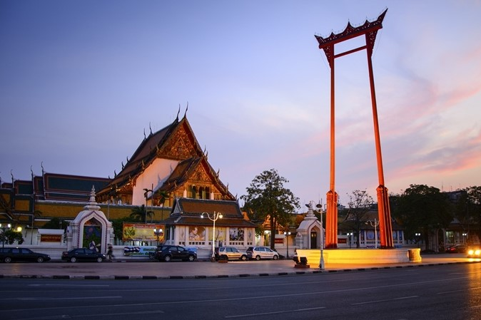

<!--
  Generated template for the TravelingPage page.

  See http://ionicframework.com/docs/components/#navigation for more info on
  Ionic pages and navigation.
-->
<ion-header>

  <ion-navbar>
    <ion-title>Travelling</ion-title>
  </ion-navbar>

</ion-header>


<ion-content class="card-background-page">

  <ion-card>
    
    <div class="card-title">Bangkok City</div>
    <div class="card-subtitle">...Capital City...</div>
  </ion-card>

  <ion-card>
    
    <div class="card-title">Ranong City</div>
    <div class="card-subtitle">...Grass Hill...</div>
  </ion-card>

  <ion-card>
    
    <div class="card-title">Chiangmai City</div>
    <div class="card-subtitle">...North Culture...</div>
  </ion-card>

</ion-content>
